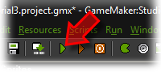
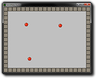

Tutorial
Page 7 of 15
Testing The Game
Now it is time to test the game. Better save the game first. Click on the Run menu and press
Run normally or press the green run button in the tool-bar.

If you followed the previous steps correctly the GameMaker window disappears and
a window shows in which the apples move around. If they
hit the wall they should bounce back. And if you manage to click with your mouse on one of the apples,
it will jump somewhere else.

Better check the game carefully. Do the apples move in different directions? If not you probably did not
create the correct Create event. Do they bounce of the walls? If not, you probably either did not
make the walls solid or you did not create the correct Collision event. Can you click on them with
the mouse? If not you must have made an error in the Mouse press
event.
You can switch the game to fullscreen mode by pressing ALT+ENTER. Press Esc to end the game.